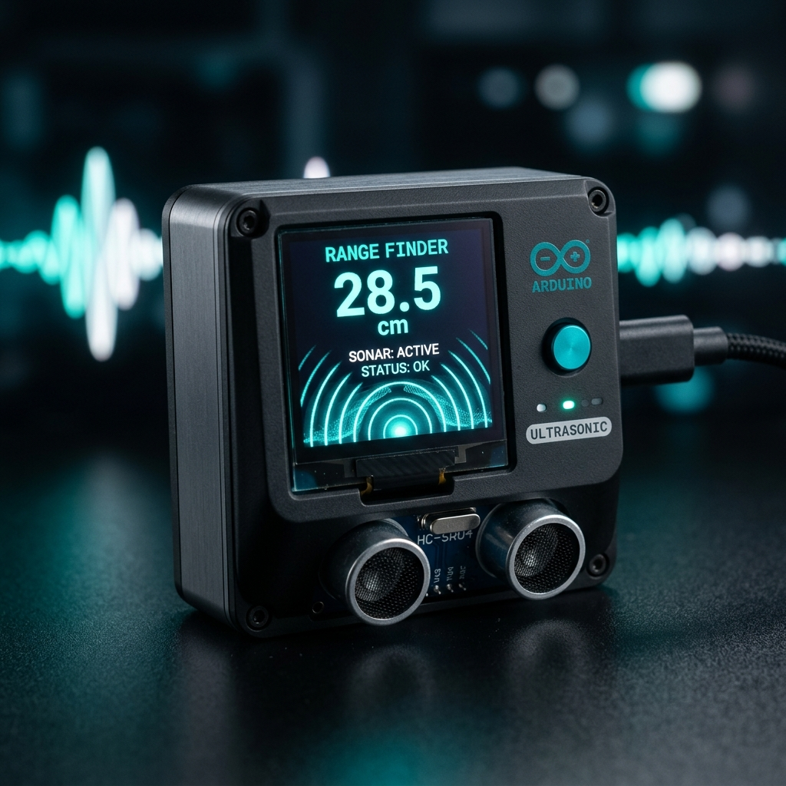
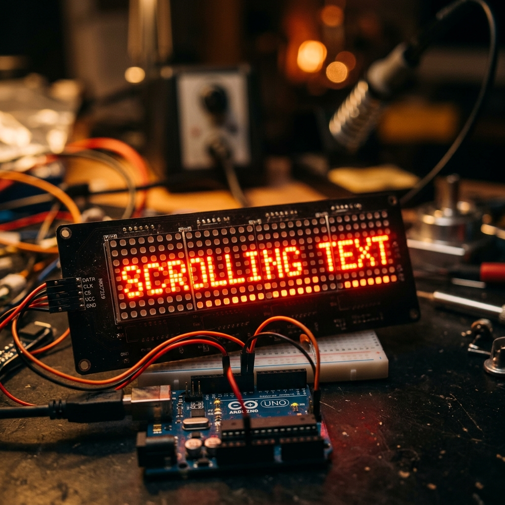

Ultrasonic Distance Meter

Project Overview
The Ultrasonic Distance Meter is a handheld Arduino-based measurement tool that uses the HC-SR04 ultrasonic sensor to measure distances from 2cm to 400cm with ±3mm accuracy. Results are displayed on a 0.96" I2C OLED screen with a real-time sonar-style bar graph and a buzzer that beeps faster as an object gets closer — making it useful for robotics obstacle detection and DIY measurement applications.
Key Features & Implementation
- HC-SR04 Ultrasonic Sensing: The sensor emits a 40kHz ultrasonic burst and measures the echo return time. The Arduino converts the time-of-flight to distance using the speed of sound, averaging 5 readings to reduce noise.
- OLED Real-Time Display: A 128x64 OLED screen renders the numeric distance, unit (cm/inches switchable), and a dynamic bar graph that scales visually from 0–400cm.
- Proximity Buzzer Alert: A passive buzzer generates PWM tones with beep frequency inversely proportional to distance — creating an intuitive parking-sensor style audio warning below 30cm.
Challenges Solved
Ultrasonic readings were noisy near angled or soft surfaces. A median-filter algorithm over a 7-sample rolling window was implemented, discarding outliers before computing the final distance, reducing measurement variance by over 80% across different surface types.
Explore Related Projects
Discover more of our sensor and robotics projects.

Line Following Robot
Autonomous robot navigating black-line tracks using a 5-sensor IR array and real-time PID speed control.

LED Matrix Display
Arduino-powered 8x32 cascaded LED matrix with scrolling text and wireless message updates via Bluetooth.